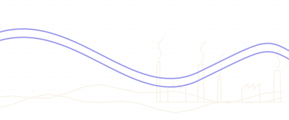

Country guide · drawn from 744 verified pins
Germany
Known for: Zitadelle JülichPalais des Ducs de LorraineBrauhaus Im Dom
3 guides · 751 places · 451 sights · 300 to eat & drink · status last checked 2026-09-02.
Three cross-border/regional maps — Saarbrücken & the SaarLorLux Greater Region, Aachen & the Dreiländereck (Eifel, Maastricht, Ostbelgien), and the Rhineland (Cologne, Bonn & Düsseldorf).
-

Saarbrücken
287 places DibbelabbesLyonerPalais des Ducs de LorraineRead as a guidebook — SaarbrückenSee it in numbers — Saarbrücken
-

Aachen
203 places PrintenSauerbratenZitadelle Jülich -

The Rhineland
261 places KölschAltbierBeethoven-HausRead as a guidebook — The RhinelandSee it in numbers — The Rhineland
Collections in Germany4 collections · counts from the guides
- 53Michelin & fine diningStarred and bib-gourmand tables, each with its source · across Germany The Rhineland 33Aachen 13Saarbrücken 7
- 30World HeritageUNESCO-listed sites, pinned to the door · across Germany Saarbrücken 26Aachen 2The Rhineland 2
- 32Beer halls & brewersTrappist taps, Kölsch and the brown cafés that pour them · across Germany The Rhineland 23Saarbrücken 5Aachen 4
- 181Free to visitMuseums, parks and landmarks that cost nothing · across Germany Saarbrücken 87Aachen 50The Rhineland 44